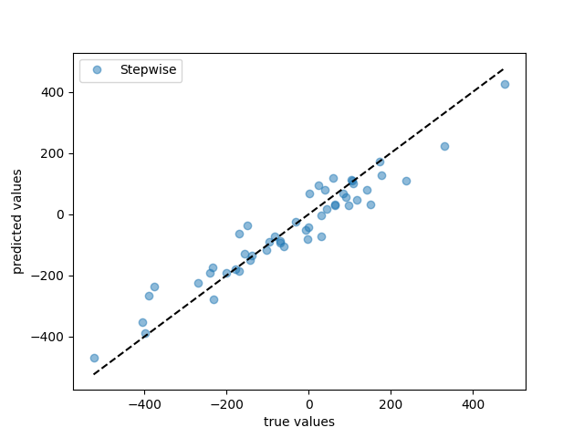

Note
Go to the end to download the full example code
Using stepwise estimator#
Stepwise estimator can be used to implement stepwise fitting. It comprises several regressor, each responsible for fitting specific rows of the feature matrix to the target vector and passing the residual values down to be fitted by the subsequent regressors.
This example is purely for demonstration purpose and we do not expect any meaningful performance improvement.
However, stepwise fitting can be useful in certain problems where groups of covariates have substantially different effects on the target vector.
For example, in fitting the atomic configration energy of an crystalline solid using a cluster expansion of an ionic system, one might want to fit the energy to single site features first then subtract those main effects from the target, and fit the residual of energy to other cluster interactions.
- 
Lasso performance metrics:
train r2: 0.954
test r2: 0.904
train rmse: 45.437
test rmse: 60.245
import matplotlib.pyplot as plt
import numpy as np
from sklearn.datasets import make_regression
from sklearn.linear_model import Lasso, Ridge
from sklearn.metrics import mean_squared_error, r2_score
from sklearn.model_selection import KFold, train_test_split
from sparselm.model_selection import GridSearchCV
from sparselm.stepwise import StepwiseEstimator
X, y, coef = make_regression(
n_samples=200,
n_features=100,
n_informative=10,
noise=40.0,
bias=-15.0,
coef=True,
random_state=0,
)
X_train, X_test, y_train, y_test = train_test_split(
X, y, test_size=0.25, random_state=0
)
# Create estimators for each step.
# Only the first estimator is allowed to fit_intercept!
ridge = Ridge(fit_intercept=True)
lasso = Lasso(fit_intercept=False)
cv5 = KFold(n_splits=5, shuffle=True, random_state=0)
params = {"alpha": np.logspace(-1, 1, 10)}
estimator1 = GridSearchCV(ridge, params, cv=cv5, n_jobs=-1)
estimator2 = GridSearchCV(lasso, params, cv=cv5, n_jobs=-1)
# Create a StepwiseEstimator. It can be composed of either
# regressors or GridSearchCV and LineSearchCV optimizers.
# In this case, we first fit the target vector to the first 3
# and the last feature, then fit the residual vector to the rest
# of the features with GridSearchCV to optimize the Lasso
# hyperparameter.
stepwise = StepwiseEstimator(
[("est", estimator1), ("est2", estimator2)], ((0, 1, 2, 99), tuple(range(3, 99)))
)
# fit models on training data
stepwise.fit(X_train, y_train)
# calculate model performance on test and train data
stepwise_train = {
"r2": r2_score(y_train, stepwise.predict(X_train)),
"rmse": np.sqrt(mean_squared_error(y_train, stepwise.predict(X_train))),
}
stepwise_test = {
"r2": r2_score(y_test, stepwise.predict(X_test)),
"rmse": np.sqrt(mean_squared_error(y_test, stepwise.predict(X_test))),
}
print("Lasso performance metrics:")
print(f" train r2: {stepwise_train['r2']:.3f}")
print(f" test r2: {stepwise_test['r2']:.3f}")
print(f" train rmse: {stepwise_train['rmse']:.3f}")
print(f" test rmse: {stepwise_test['rmse']:.3f}")
# plot predicted values
fig, ax = plt.subplots()
ax.plot(y_test, stepwise.predict(X_test), "o", label="Stepwise", alpha=0.5)
ax.plot([y_test.min(), y_test.max()], [y_test.min(), y_test.max()], "k--")
ax.set_xlabel("true values")
ax.set_ylabel("predicted values")
ax.legend()
fig.show()
# plot model coefficients
fig, ax = plt.subplots()
ax.plot(coef, "o", label="True coefficients")
ax.plot(stepwise.coef_, "o", label="Stepwise", alpha=0.5)
ax.set_xlabel("covariate index")
ax.set_ylabel("coefficient value")
fig.show()
Total running time of the script: ( 0 minutes 0.528 seconds)